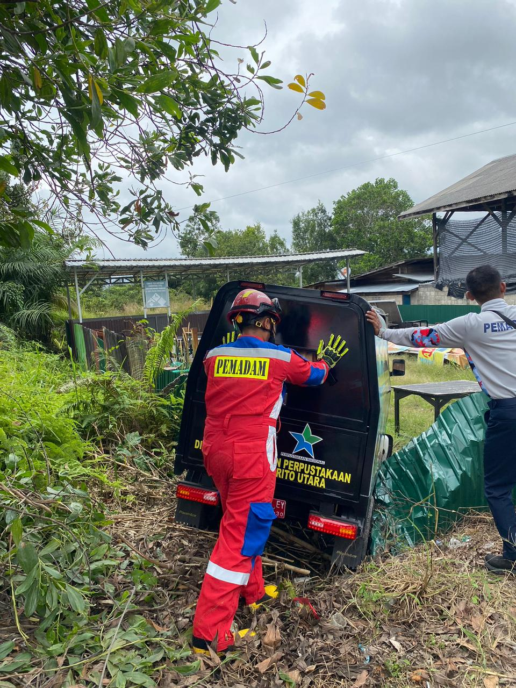
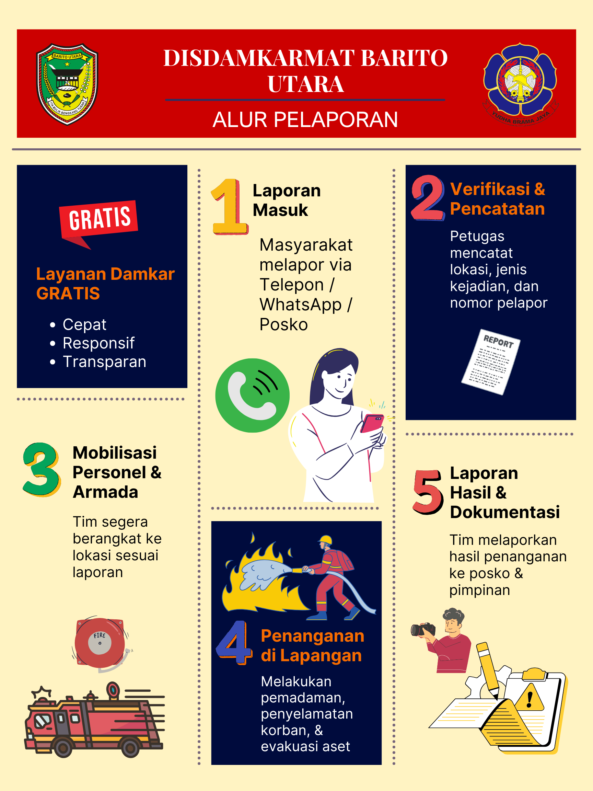

Layanan Darurat DAMKAR
Hubungi segera jika terjadi kebakaran atau keadaan darurat lainnya.
Jenis Layanan Damkar
🔥 Pemadaman Kebakaran
Penanganan kebakaran rumah, gedung, hutan, dan fasilitas umum.

🚑 Penyelamatan
Pertolongan kecelakaan, evakuasi hewan, dan bantuan darurat lain.
🧯 Edukasi & Sosialisasi
Pelatihan penggunaan APAR dan sosialisasi pencegahan kebakaran.
Alur Laporan
Panduan alur pelaporan dari masyarakat ke Damkar.
Tips Pencegahan Kebakaran
Tutorial Pemadaman
Video yang mudah diikuti untuk tindakan awal saat api kecil.